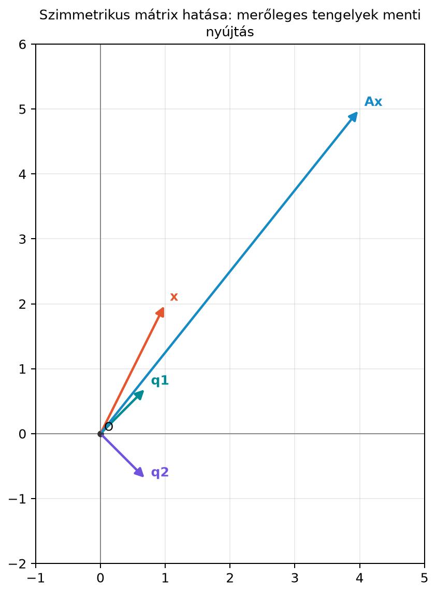

14.1 A spektráltétel: szimmetrikus
mátrixok ortogonális sajátbázisa
14.1.1 Motiváció
A szimmetrikus mátrixok a lineáris algebra leggyakrabban előforduló
mátrixai közé tartoznak. Ha egy adathalmazból kovarianciamátrixot
számolunk, ha egy optimalizálási feladat második deriváltjait
(Hesse-mátrix, Hessian) írjuk fel, vagy ha gráfok kapcsolatait
reprezentáljuk, szinte mindig
tulajdonságú mátrixot kapunk. Az általános mátrixoknál a diagonalizálás
bonyolult lehet: vannak mátrixok, amelyeknek nincs valós sajátértékük
(például a forgatás), és olyanok is, amelyeknek nincs elég független
sajátvektoruk. Fölmerül a kérdés: a szimmetrikus mátrixok mindig
„rendesen” viselkednek-e? A spektráltétel éppen erre ad határozott
igent: minden valós szimmetrikus mátrix valós
sajátértékekkel és ortonormált sajátbázissal
rendelkezik, tehát a lehető legkényelmesebb módon diagonalizálható.
14.1.2 Szemléletes kép
Tekintsük az
mátrixot. Kiszámolható, hogy sajátértékei
és
,
a hozzájuk tartozó egységnyi sajátvektorok pedig
A két sajátvektor merőleges egymásra, mert
.
Ha egy tetszőleges
vektort felbontunk e két ortonormált irány mentén:
akkor az
hatása rendkívül egyszerű: a
irányú komponenst
-szorosára,
a
irányú komponenst
-szeresére
nyújtja:
Az ábrán ez úgy látszik, mint egy ferde koordináta-rendszer helyett
egy merőleges tengelypár mentén történő nyújtás. A
mátrix nem forgatja el a tengelyeket, csak az azokra eső komponenseket
skálázza.

Szimmetrikus mátrix hatása: merőleges
tengelyek menti nyújtás - A q1 és q2 sajátvektorok ortonormáltak; az x
vektort fölbontva ezek szerint az A x a q1 irányban 3-szoros, q2
irányban 1-szeres nyújtással kapható. Az egységvektorok koordinátái
1/√2-del arányosak, az Ax értéke a szövegbeli példából
(4,5).
Az ábrán
és
merőleges egymásra,
pedig a két irányba eső komponensek összege. A transzformált
úgy adódik, hogy a két sajátirány szerinti komponenst a megfelelő
sajátértékkel szorozzuk.
14.1.3 Definíció
A spektráltétel a szimmetrikus mátrixok legfontosabb tulajdonságát
mondja ki.
Definíció. Egy
mátrix ortogonálisan diagonalizálható, ha létezik olyan
ortogonális mátrix
()
és olyan
diagonális mátrix, amelyre
.
Tétel (spektráltétel valós szimmetrikus mátrixra).
Legyen
szimmetrikus, azaz
.
Ekkor létezik
ortogonális mátrix
()
és
valós diagonális mátrix, amelyre
A
valós számok az
sajátértékei, a
oszlopai pedig a hozzájuk tartozó, egymásra kölcsönösen merőleges,
egységnyi hosszú sajátvektorok. Ezt az alakot ortogonális
diagonalizálásnak nevezzük; a tétel tehát azt mondja, hogy
minden valós szimmetrikus mátrix ortogonálisan diagonalizálható. Mivel
ortogonális,
,
ezért ugyanez írható
alakban is.
A szimmetrikus mátrixok tehát mindig rendelkeznek ortonormált
sajátbázissal. Ez nem igaz általában; például a
-os
síkforgatásnak nincsenek valós sajátértékei, bizonyos Jordan-blokkos
mátrixoknak pedig nincs teljes sajátvektorrendszerük.
14.1.4 Kidolgozott példa
Diagonalizáljuk ortogonálisan az
mátrixot.
Először a karakterisztikus egyenletet írjuk fel:
A gyökök:
és
.
Mindkettő valós.
A
sajátértékhez tartozó egyenlet:
Az első sorból
,
azaz
.
Egy lehetséges sajátvektor
.
Ezt normáljuk:
A
sajátértékhez:
tehát
,
azaz
.
A normált sajátvektor:
Látjuk, hogy
,
tehát az ortonormált bázis készen van. Így
Ellenőrizzük, hogy
:
A jobb oldali szorzást elvégezve:
Ezután a bal oldali
-val
szorozva:
Így
teljesül.
14.1.5 Merőlegesség
bizonyítása
A spektráltétel több állítást foglal magában. Az egyik legfontosabb,
hogy a különböző sajátértékekhez tartozó sajátvektorok
mindig merőlegesek. Ezt egyszerűen be tudjuk látni.
Állítás. Ha
szimmetrikus, és
olyan sajátvektorok, amelyekhez
sajátértékek tartoznak, akkor
.
Bizonyítás. Mivel
és
,
számítsuk ki az
skalárt kétféleképpen.
Egyrészt
miatt:
Másrészt használjuk a szimmetriát,
:
(Az
átalakítás a transzponálás szabálya miatt érvényes.) A két kifejezés
egyenlő, tehát
Átrendezve:
Mivel feltettük, hogy
,
ez csak úgy lehet, ha
,
vagyis a két vektor merőleges.
Szemléletes indoklás a teljes tételhez. A tétel
további két állítását itt nem bizonyítjuk teljesen, csak a
gondolatmenetet vázoljuk. (1) A sajátértékek valósak: ennek rövid
bizonyítása komplex vektorokkal és komplex konjugálással történik, ami
túlmegy a 13.4. alfejezetben (Forgatások és komplex
sajátértékek röviden) bevezetett eszközökön. (2) Többszörös
sajátértéknél is van elég sok független sajátvektor. Ennek kulcsa, hogy
ha
egy
sajátértékhez tartozó sajátvektor, akkor a rá merőleges vektorok altere
is invariáns: ha
,
akkor
.
Ezen a kisebb altéren tehát újabb, az előzőre merőleges sajátvektort
kereshetünk, és lépésenként felépül a teljes ortonormált sajátbázis. Egy
sajátaltéren belül a sajátvektorokat Gram–Schmidt-eljárással
ortonormálhatjuk. A teljes bizonyítás (például Strang tankönyvében) ezt
a gondolatmenetet teszi pontossá.
14.1.6 Spektrális felbontás mint
rang-1 mátrixok összege
A
szorzatot másképp is ki lehet fejteni. Jelölje
oszlopait
.
Ekkor
A mátrixszorzás külső szorzat alakját használva:
Ez a spektrális felbontás. Minden
egy
-es,
rang-1-es mátrix; valójában ez a
irányegyenesre való ortogonális vetítés mátrixa, mert
egységvektor. A spektrális felbontás tehát azt mondja, hogy a
szimmetrikus mátrix fölírható egymásra merőleges irányokra
vetítő mátrixok súlyozott összegeként.
A kidolgozott példában:
Ezért
Ez a felbontás a későbbi alacsony rangú közelítések és a
főkomponens-elemzés alapja.
14.1.7 NumPy-ellenőrzés
A NumPy-ban szimmetrikus mátrixokra a np.linalg.eigh
függvényt használjuk, mert az kihasználja a szimmetriát, garantáltan
valós sajátértékeket ad, és a sajátvektorokat ortonormált mátrixba
rendezi.
Várt kimenet (a sajátvektorok előjele oszloponként eltérhet, ezért a
konkrét
oszlopai előjelet válthatnak; a Q.T @ Q szorzatot kiírva a
főátlón kívül
nagyságrendű kerekítési maradék is megjelenhet, ezért
np.allclose-szal ellenőrzünk):
Az eigh a sajátértékeket nem a mi kézi sorrendünkben
(),
hanem növekvő sorrendben adja meg: előbb a
,
majd a
.
Ennek megfelelően a
oszlopai is felcserélődnek: az első oszlop a
-höz
tartozó
,
a második a
-höz
tartozó
lesz, esetleg előjelváltással. A rekonstruált szorzat azonban mindig
visszaadja
-t.
14.1.8 Kapcsolat a gépi
tanulással
A spektráltétel az egyik leggyakrabban használt mátrixtulajdonság a
gépi tanulásban. Amikor egy adatmátrixból kovarianciamátrixot számolunk,
az definíció szerint szimmetrikus, ezért a
spektráltétel garantálja, hogy van ortonormált sajátbázisa. Ez az alapja
a főkomponens-elemzésnek: a legnagyobb sajátértékekhez tartozó
sajátvektorok adják az adatok legnagyobb szórású irányait, és ezek a
főkomponensek egymásra merőlegesek. A lineáris regresszió
normálegyenletében az
mátrix szintén szimmetrikus; a ridge-regresszióban pedig
ugyancsak az, így a spektráltétel a numerikus stabilitás elemzésében is
szerepet kap. A részletes PCA-levezetést a 18.3. alfejezetben (Főkomponens-elemzés (PCA) SVD-vel) tárgyaljuk.
14.1.9 Tipikus hibák és
félreértések
Az ortogonális diagonalizálást összetéveszteni az
általános diagonalizálással. Nem minden diagonalizálható mátrix
ortogonálisan diagonalizálható. Az
alakban
általában nem ortogonális;
-ot
csak akkor írhatunk
helyett, ha az oszlopok ortonormáltak. Szimmetrikus mátrixra ez mindig
elérhető.
Elfelejteni normálni a sajátvektorokat. Ha a
sajátvektorokat csak merőlegesnek, de nem egységnyinek választjuk, akkor
,
és a rekonstrukció
nem adja vissza az eredeti mátrixot. A
oszlopainak ortonormáltaknak kell lenniük.
Rossz sorrend a szorzatban. Az ortogonális
diagonalizálás alakja
,
nem pedig
vagy
.
A mátrixszorzás nem kommutatív, ezért a tényezők sorrendje
lényeges.
np.linalg.eig helyett eigh
használata általános mátrixra. Az eigh
kifejezetten szimmetrikus (vagy komplex Hermite-féle) mátrixokra való,
és hatékonyabb, illetve stabilabb. Általános mátrixra viszont csendben
hibás eredményt ad: a NumPy dokumentációja szerint csak a mátrix egyik
(alapértelmezésben az alsó) háromszögét olvassa, így hibaüzenet nélkül
egy másik, szimmetrikus mátrix sajátértékeit adja vissza.
14.1.10 Feladatok
14.1.10.1 (a) Fogalmi kérdés
Melyik mátrix ortogonálisan diagonalizálható valós
együtthatókkal?
14.1.10.2 (b) Kézi számolás
Diagonalizálja ortogonálisan az
mátrixot. Adja meg a
és
mátrixokat, és ellenőrizze a
feltételt.
14.1.10.3 (c) NumPy-feladat
Adott
Írjon rövid NumPy-kódot, amely np.linalg.eigh-val
kiszámítja a sajátértékeket és a
mátrixot, majd ellenőrzi, hogy
visszaadja-e
-t.
14.1.10.4 (d) Gondolkodtató
feladat
Legyen
szimmetrikus, sajátértékei
.
Mutassa meg a spektrális felbontás segítségével, hogy
is szimmetrikus, és sajátértékei
.
14.1.11 Megoldások
14.1.11.1 (a) Megoldás
nem diagonalizálható, mert a
sajátértékhez csak egydimenziós sajátaltér tartozik; ez a mátrix nem
szimmetrikus.
a
-os
forgatás mátrixa, sajátértékei komplexek
(
és
),
így valós felett nem diagonalizálható.
szimmetrikus, tehát a spektráltétel alapján ortogonálisan
diagonalizálható.
14.1.11.2 (b) Megoldás
A sajátértékek:
és
.
esetén:
ezért
,
így
.
esetén:
ezért
,
így
.
Tehát
Ellenőrzés:
,
mert a két oszlop egymásra merőleges és egységnyi hosszú.
A sajátértékek pontosan
,
és
(az eigh növekvő sorrendben adja őket). A rekonstrukciós
hiba nem pontosan
,
hanem
nagyságrendű kerekítési hiba, ezért vizsgáljuk
np.allclose-szal.
14.1.11.4 (d) Megoldás
A spektrális felbontás:
Ekkor
Mivel a
vektorok ortonormáltak,
,
ha
,
és
,
ha
.
Ezért a szorzatból csak a
tagok maradnak meg:
Ez ismét spektrális felbontás, most
sajátértékekkel, és ugyanazokkal az ortonormált sajátvektorokkal. Mivel
valós, és a
mátrixok szimmetrikusak,
is szimmetrikus.
14.1.12 Rövid összefoglaló
A valós szimmetrikus mátrixokra kimondott spektráltétel szerint
minden
mátrix fölírható
alakban, ahol
ortogonális,
pedig valós diagonális mátrix. A
oszlopai ortonormált sajátvektorok, a
főátlójában a megfelelő sajátértékek állnak. A különböző sajátértékekhez
tartozó sajátvektorok szükségképpen merőlegesek, amit az
skalár kétféle kiszámításával igazolhatunk. A spektrális felbontás
alakban mutatja, hogy a szimmetrikus mátrix merőleges irányokra vetítő
rang-1 mátrixok súlyozott összege. Numerikusan a
np.linalg.eigh függvényt használjuk szimmetrikus
esetben.
A legfontosabb képletek:
14.1.13 Források és ellenőrzési
hiányok
Az alfejezet matematikai tartalma klasszikus lineáris algebra,
amelyet a hivatkozott alapművek (Strang, Introduction to Linear
Algebra; Boyd–Vandenberghe, Introduction to Applied Linear
Algebra; Deisenroth–Faisal–Ong, Mathematics for Machine
Learning) tárgyalnak. A NumPy np.linalg.eigh
viselkedése a NumPy dokumentációja szerint értendő, a kódkimenetek
illusztratívak, előjelváltás lehetséges.